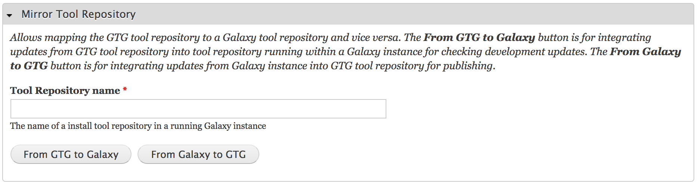

gtgr is available from GitHub. We can use the devtools::install_github() function to install R packages from GitHub.
First, we need to install the devtools package.
install.packages('devtools')Now install gtgr
devtools::install_github('mingchen0919/gtgr')After successfully installing the gtgr package, we can launch a GTG platform with the start_new_gtg() function. You need to specify a GTG working directory. All output files will be in this directory.
library(gtgr)
start_new_gtg(gtg_directory = '~/Desktop/gtg-dir', gtg_name = 'gtg')This will open a GTG platform on your browser.
Some functionalities of the GTG platform depends on a running Docker Galaxy. We can launch a Galaxy instance with launch_galaxy(). You need to specify a GTG instance name so that the Galaxy instance can be connected with it. Here we use ‘gtg’, which is what we used in the previous step. Currently, gtg is only compatible with the Galaxy Docker image created by Björn Grüning
launch_galaxy(gtg_name = 'gtg')This will open a Galaxy instance on your browser.
To list all GTGs and Galaxy instances, use the list_gtg():
list_gtg()This is basically the same as running a command line docker ps -a from within a terminal.
CONTAINER ID IMAGE COMMAND CREATED STATUS PORTS NAMES
1 a53d3a6cbb88 bgruening/galaxy-stable:17.01 "startup" About an hour ago Up About an hour 21/tcp, 443/tcp, 8800/tcp, 9002/tcp, 80 galaxy
2 e3300efb9cdc mingchen0919/gtgdocker "/entrypoint.sh /bin…" About an hour ago Up About an hour 8080 gtgTo see a list of all availabl functions from package gtgr.
help(packaeg = 'gtgr')The GTG working directory has three folders. The galaxy_tool_repository will contain all files generated from the GTG platform. And this is the tool repository directory that you want to publish to Galaxy Tool Shed (or Test Tool Shed). The database/ and shed_tools/ are two directories that mount to /export/galaxy-central/database/ and /shed_tools/ from [Björn Grüning]’s Galaxy Docker container.
.
├── database/
├── galaxy_tool_repository/
└── shed_tools/GTG has a user interface which allows you to map the galaxy_tool_repository/ to a existing tool repository within the /shed_tools/. Therefore, you can easily test the tool developed with GTG on your running Galaxy instance. It also allows you to map an updated tool shed repository back to the galaxy_tool_repository/ so that you can publish the updates to Galaxy Tool Shed (or Test Tool Shed).
